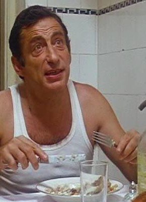

#7988 Eis am Stiel 4 - Hasenjagd
Alternativ: Private Popsicle (Englischer Titel)


 IMDB-Wertung: 5.5 / 10
IMDB-Wertung: 5.5 / 10  Metascore: 0
Metascore: 0 
Three Israeli friends - Bobby, Benji and Hughie - joined the mandatory army drafted, but they're not quite ready to give up the freedom they've enjoyed for so long and submit to army discipline. They spend most of their time chasing women, trying to get out of doing any work, and avoiding their no-nonsense sergeant.
Jahr: 1982
Dauer: 75 Minuten
FSK: 16
Land: Israel Studio: ITT ContrastTonspuren:
Untertitel:
Auflösung: 1080p (1872x1080) Größe: 4433 MB
Genre: Drama, Komödie, Liebe
Regisseur: Boaz Davidson
Drehbuch: Boaz Davidson
Soundtrack: Paul Fishman
Darsteller:
 Yftach Katzur als Benzi / Benji
Yftach Katzur als Benzi / Benji Zachi Noy als Yudale / Hughie
Zachi Noy als Yudale / Hughie Jonathan Sagall als Momo / Bobbie
Jonathan Sagall als Momo / Bobbie Dvora Kedar als Benji's mother
Dvora Kedar als Benji's mother-  Menashe Warshavsky als Benji's father
 Joseph Shiloach als Sgt.Shemesh / Ramirez
Joseph Shiloach als Sgt.Shemesh / Ramirez- Moshe Ish-Kassit als Captain
- Devora Bakon als Marshmallow
- Sonja Martin als Rina / René
- Bea Fiedler als Eva
- Shmuel Eiser als Boris
- Louis Rosenberg als Military psychiatrist
- Anatol Constantin als Army barber
- Olga Spondorf als Mrs. Pomerantz
- Pesach Gotmark als Mr. Pomerantz
- Arieh Shein als Mr. Klinger
- Noam Aviram als Draftee
- Hagit Mor als Girl soldier
- Mimon Ruth als Nightclub singer
- Dietmar Siegart als Norwegian general
- Meira Arazi als Female Norwegian officer
- Savich Goldreich als Impresario
- Rina Levi als Opera singer
- Gili Klein als Nurse
- Jupiter Leonid als Army doctor
- Alexander Rotblum als Accordionist
Datei: X:\7+mehr(A-Z)\Eis am Stiel\Eis am Stiel 4 - Hasenjagd (1982, FSK16, 1872x1080).mkv seit 09.01.2018
Festplatte: HD Collection-7+mehr(A-Z)+Person
 Es gibt insgesamt 11 Filme in der Gruppe '7+mehr(A-Z)\Eis am Stiel'
Es gibt insgesamt 11 Filme in der Gruppe '7+mehr(A-Z)\Eis am Stiel'